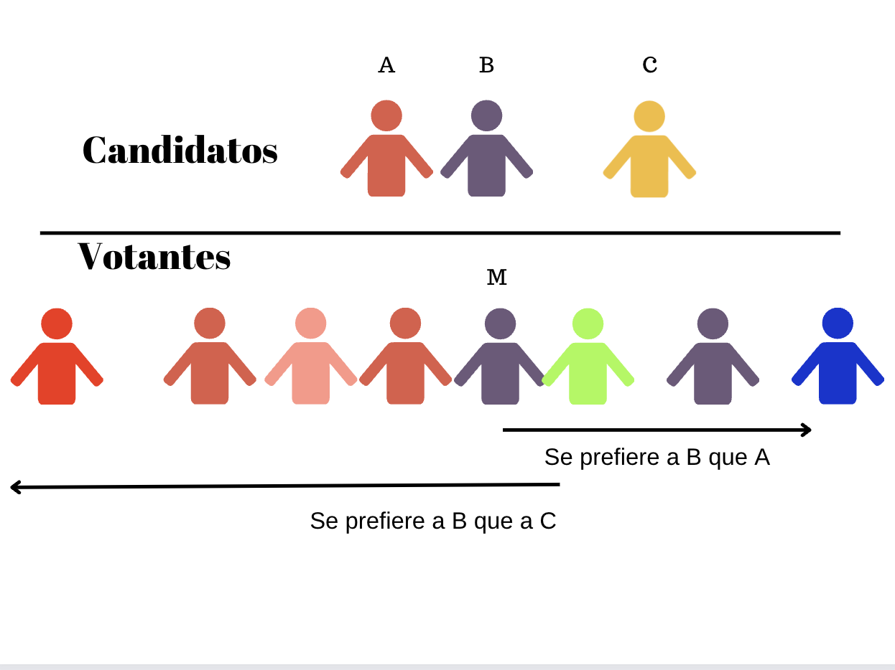
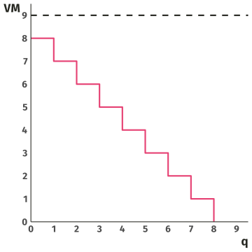

Análisis de precios
Maestría en Mercadeo
Semana 3
- Como vamos?
- Preguntas de la clase anterior? üò¨
- Empezaremos con Python para caso de segmentación
- Introducimos una técnica adicionales (PCA)
- Hablaremos de la disponibilidad a pagar
- Miraremos el primer set de precios

Estrategia de Marketing
- Segmentación Como difiere un comprador
- Targeting Que segmento puede ser fichado
- Posicionamiento
- Donde estamos?
- Cuantos consumidores perciben la marca
- Cuál es nuestra propuesta de valor
- Como queremos marcar la percepción del consumidor
- Mapear el mercado no ayuda a posicionar
Estrategia de Marketing
Los mapas de mercado utilizan los datos de los clientes para describir la situación de la competencia. ¿Por qué?
- Permiten comprender la posición de la marca o el producto en el mercado
- Se hace seguimiento a los cambios
- Identifican nuevos productos o características a desarrollar
- Ayudan a comprender las decisiones de imitación/diferenciación de la competencia
- Permiten evaluar los resultados de tácticas recientes
- Se logra identificar a las ventas cruzadas, publicidad, complementos o sustitutos, servicios de paquetes
Dentro del mapa de mercado
Diferenciación vertical (1)
- Atributos del producto en los que más es mejor, todo lo demás permanece constante
- Eficacia, por ejemplo, velocidad o potencia de la CPU
- Eficiencia, por ejemplo, consumo de energía
- Buena calidad del insumo (por ejemplo, ropa, alimentos)
- Importante ⚠️ : no todo el mundo compra la mejor opción ¿por qué no?
Dentro del mapa de mercado
Diferenciación horizontal (2)
- Atributos del producto con valoraciones heterogéneas
- Ubicación física
- Familiaridad, por ejemplo, con lo que se ha crecido
- Sabor, por ejemplo: dulzor o salado
- Imagen de marca, por ejemplo: Kola Roman, Productos Postobon, Coca-Cola
- Complementos, por ejemplo, auriculares o cables de carga
Ejemplo visual üòÄ
Ejemplo:
Note
El modelo de localización, propuesto por Harold Hotelling en 1929, es un concepto en la teoría económica que analiza la ubicación estratégica de dos o más competidores en un mercado. Este modelo se utiliza para entender cómo las empresas toman decisiones de ubicación para maximizar sus beneficios y cómo estas decisiones afectan la competencia en el mercado.
Ejemplo:
## Teorema del votante mediano

Estrategia de análisis de PCA (Componentes Principales)
Definición PCA
Es una técnica estadística y matemática utilizada para reducir la dimensionalidad de un conjunto de datos multidimensionales, al mismo tiempo que conserva la mayor cantidad posible de información relevante contenida en esos datos.
- Identifica Patrones
- Simplifica los datos
- Brinda pesos específicos importantes
- Anda y habla con las covarianzas
PCA en acción
Tome como referencia
- Tenemos clones
- Busca lo mas mínimo
- Alguien tiene virus
PCA en acción
Tome como referencia
- Tiene gafas
- Usa tapabocas
- Ya hay diferencias
PCA en acción
Tome como referencia
- Ya es una lógica mas completa
- Tres (3) Variables
- \(PCA=x+y+z\)
- \(PCA= Edad+Dispositivos+Tamaño\)
El asunto del PCA
Enfoque 1
- Tenemos una ecuación que: \[0.3\;Edad+10.8\;Dispositivos+5.6\;Tamaño\]
Enfoque 2
- Puede variar el peso y encontrar otro \[110\;Edad+0.3\;Dispositivos+600\;Tamaño\]
El asunto del PCA
Número optimo de Componentes
- Ejemplo 1 ü§≠
- Si tiene 10 muestras y 40 atributos
- Entonces posiblemente tendremos 10 PC
- Ejemplo 2 ✋
- Si tiene 100 muestras y 40 atributos
- Entonces tendrá 40 PC
El asunto del PCA
- La dimensionalidad siempre va ser menor o reducida. Nunca habrá demasiados PCA’s en la medida que tenga demasiada muestra
- El PCA1 regularmente es el que mas explica la varianción de la muestra.
- El PCA2 es aquel que en un segundo lugar explica la varianción de la muestra.
El asunto del PCA
Vamos a Python!!
Consideraciones adicionales
Regresemos con lo conceptual
Disponibilidad a Pagar
Disposicion a pagar
Gráfico de Kyle Raze
- La Demanda dice de la disposición a pagar
- \(\Downarrow P \rightarrow Q_d \Uparrow\)
Disposicion a ofrecer
Gráfico de Kyle Raze
- La Oferta dice de la disposición a ofrecer
- \(\Uparrow P \rightarrow Q_s \Uparrow\)
Equilibrio de mercado
Gráfico de Kyle Raze
- La Oferta y Demanda se igualan
- La \(Q_d = Q_s\)
- Por otro lado tendremos desequilibrio
Equilibrio de mercado
Gráfico de Kyle Raze
- La Oferta y Demanda se igualan
- La \(Q_d = Q_s\)
- Note que 5 son las unidades requeridas
Desequilibrio de mercado
- La Oferta y Demanda no son similares
- La \(Q_d \neq Q_s\)
- Ocurre algo como:

Desequilibrio de mercado
- La Oferta y Demanda no son similares
- Precios \(\Uparrow P\)
- Se ofrecen 3 unidades
Desequilibrio de mercado
- La Oferta y Demanda no son similares
- Precios \(\Downarrow P\)
- Hay exceso de oferta
Desequilibrio de mercado
- La Oferta y Demanda no son similares
- Precios \(\Downarrow P\)
- Se ofrecen 7 unidades
Disposición a pagar
Elementos
- Los mercados pueden ajustarse a si mismos.
- Muchas veces son intervenidos por el mismo estado
- El precio sigue siendo la señal del mercado.
- Las incidencias tambien tienen que ver con incentivos
Valoración Marginal
- El valor marginal VM
- Si \(\uparrow Q\rightarrow VM\downarrow\)
- Buscamos que \(Q=VM\)
Valoración Marginal
- Cuantas unidades debe consumir a \(P=4.5\)?
- R./
Valoración Marginal
- Cuantas unidades debe consumir a \(P=4.5\)?
- R./ 4
Valoración Marginal
- Cuantas unidades debe consumir a \(P=3\)?
- R./
Valoración Marginal
- Cuantas unidades debe consumir a \(P=3\)?
- R./ 6
Valoración Marginal

- Cuantas unidades debe consumir a \(P=9\)?
- R./
Valoración Marginal
- Cuantas unidades debe consumir a \(P=9\)?
- R./ 0
Valoración Marginal
Las decisiones de compra. Mentalmente se asocian a la valoración marginal
Reglas:
- Detenga sus compras si \(VM>P\). Ya usted ha comprado muy poco
- Detenga sus compras si \(VM<P\). Ya usted ha comprado demasiado
- Haga sus compras si \(VM=P\). Usted ha comprado lo optimo
Excedente del Consumidor
- Excedente del consumidor
- Es el objetivo a conseguir
- Se debe intentar extraer al máximo
Estrategia de precio vía segmento
Diferenciando
- Supervivencia
- Máximo beneficio actual
- Máxima cuota de mercado
- Máximo aprovechamiento del mercado
- Liderazgo en calidad del producto
Diferenciando
Concepto desde el costo
- Los precios son consecuentes con:
- \(\mathbb{B}=\color{red}{Precio}\times Cantidad - \mathbb{CT}\)
- Dentro los costos totales (CT), tenemos los fijos y variables
- \[\mathbb{B}=\color{red}{Precio}\times Cantidad - salarios(H)-arriendos(K)\]
Estrategias
Gracias por su atención
Raze, K (2022). Lecture Notes: Principles in Microeconomics.
Wilbur, K (2023). Teaching material.
Dzwigol, H. (2020). Innovation in marketing research: quantitative and qualitative analysis.